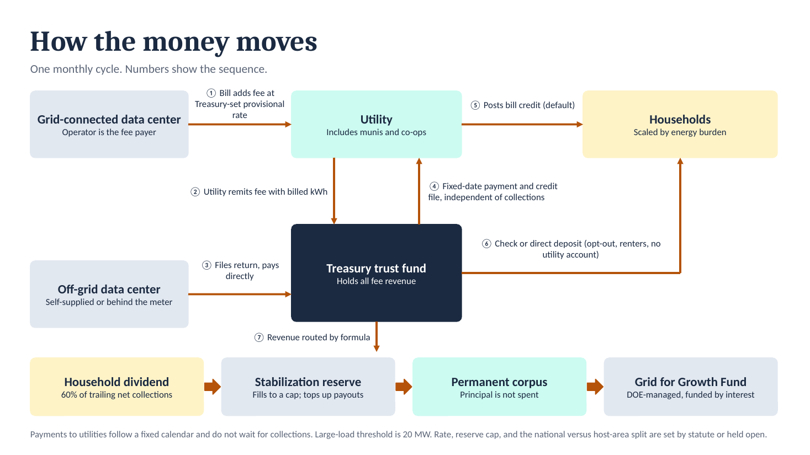
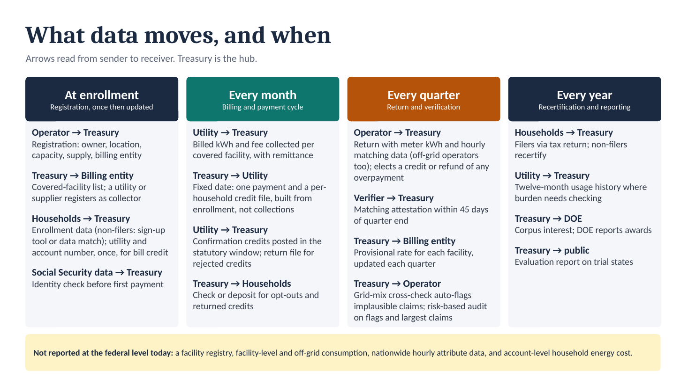
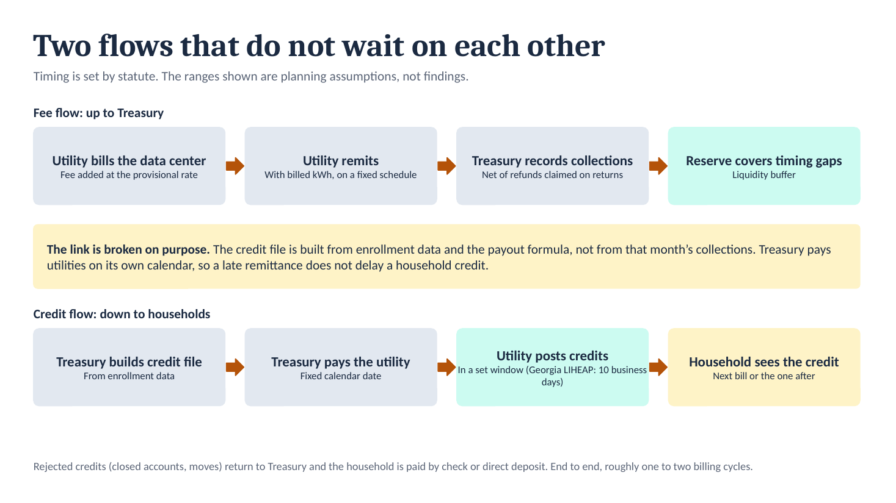
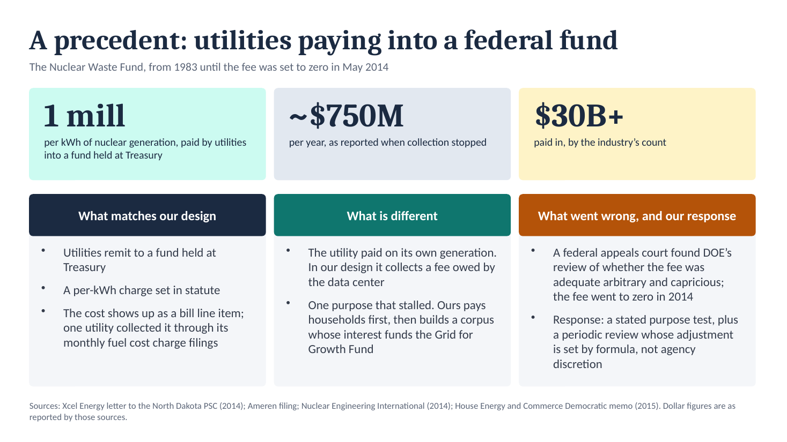
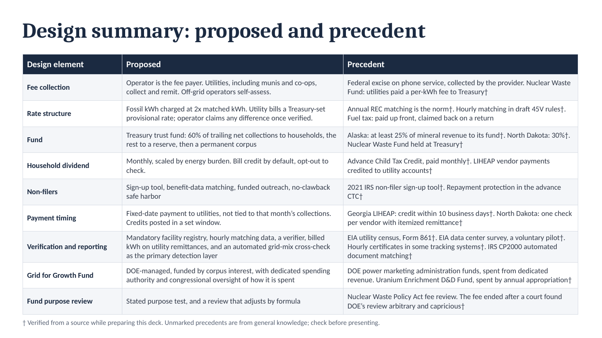
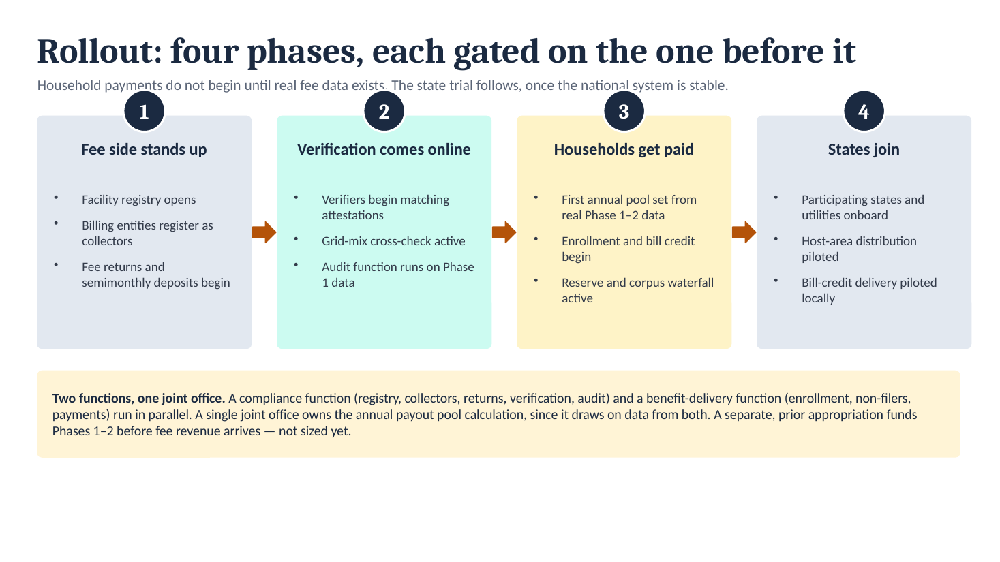

How the data center fee would work
A fee on electricity used by data centers, collected through utilities into a Treasury trust fund, paid back to households by energy burden, with the rest building a public fund. Two pieces: the design (below) and the working models (linked).
Try the numbers
Three interactive models, built on the same public data:
The fund model and the design differ in one place. The design routes revenue through a stabilization reserve and a permanent corpus whose interest funds a Grid for Growth Fund. The fund model offers two simpler choices, spend the fund each year or run it as an endowment, and splits it across four priorities you set.
The design, slide by slide






Slides from "money and data flow," Oct. 5, 2026. The 60% household share, reserve cap and other settings are design choices, not findings.